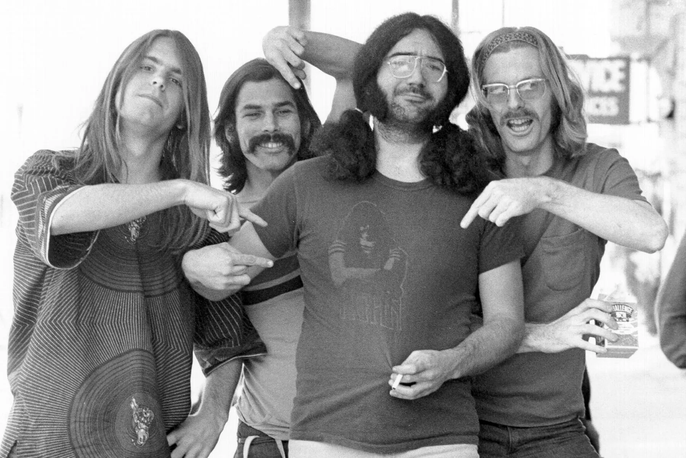

Grateful Dead
Years Active: 1965–1995
Genre/s: Rock
Label/s: Warner Bros., Grateful Dead, Arista, Rhino, Sunflower, United Artists
Past Members: Jerry Garcia, Bill Kreutzmann, Phil Lesh, Ron "Pigpen" McKernan, Bob Weir, Mickey Hart, Robert Hunter, Tom Constanten, John Perry Barlow, Keith Godchaux, Donna Jean Godchaux, Brent Mydland, Vince Welnick
The Grateful Dead was an American rock band formed in Palo Alto, California, in 1965. Known for their eclectic style that fused elements of rock, blues, jazz, folk, country, bluegrass, rock and roll, gospel, reggae, and world music with psychedelia, the band is famous for improvisation during their live performances, and for their devoted fan base, known as "Deadheads". According to the musician and writer Lenny Kaye, the music of the Grateful Dead "touches on ground that most other groups don't even know exists". For the range of their influences and the structure of their live performances, the Grateful Dead are considered "the pioneering godfathers of the jam band world".
The Grateful Dead was founded in the San Francisco Bay Area during the rise of the counterculture of the 1960s. The band's founding members were Jerry Garcia (lead guitar and vocals), Bob Weir (rhythm guitar and vocals), Phil Lesh (bass guitar and vocals), Bill Kreutzmann (drums), and Ron "Pigpen" McKernan (keyboards, harmonica, and vocals). With the exception of Pigpen, who died in 1973, the remaining founding members stayed with the band until their 1995 split, with subsequent members being Mickey Hart (drums, 1967 to 1971 and 1974 to 1995), Robert Hunter (non-performing lyricist, 1967 to 1995), Tom Constanten (keyboards, 1968 to 1970), John Perry Barlow (non-performing lyricist, 1971 to 1995), Keith Godchaux (keyboards and vocals, 1971 to 1979), Donna Godchaux (vocals, 1972 to 1979), Brent Mydland (keyboards and vocals, 1979 to his death in 1990), and Vince Welnick (keyboards and vocals, 1990 to 1995).
Following Garcia's death in August 1995, the remaining members decided to disband the Grateful Dead. Former band members, along with other musicians, toured as the Other Ones in 1998, 2000, and 2002, and as the Dead in 2003, 2004, and 2009. In 2015, Weir, Lesh, Kreutzmann, and Hart marked the band's 50th anniversary in a series of concerts in Santa Clara, California, and Chicago that were billed as their last performances together. There have also been several spin-offs featuring one or more core members, such as Dead & Company, Furthur, the Rhythm Devils, Phil Lesh and Friends, RatDog, and Billy & the Kids.
Despite having only one Top-40 single in their 30-year career, "Touch of Grey" (1987), the Grateful Dead remained among the highest-grossing American touring acts for decades. They gained a committed fanbase by word of mouth and through the free exchange of their live recordings, encouraged by the band's allowance of taping. In 2024, they broke the record for most Top-40 albums on the Billboard 200 chart. Rolling Stone ranked the Grateful Dead number 57 on its 2011 list of the "100 Greatest Artists of All Time". The band was inducted into the Rock and Roll Hall of Fame in 1994, and a recording of their May 8, 1977, performance at Cornell University's Barton Hall was added to the National Recording Registry of the Library of Congress in 2012 for being "culturally, historically, or aesthetically significant". In 2024, Weir, Lesh, Kreutzmann, and Hart were recognized as part of the Kennedy Center Honors.